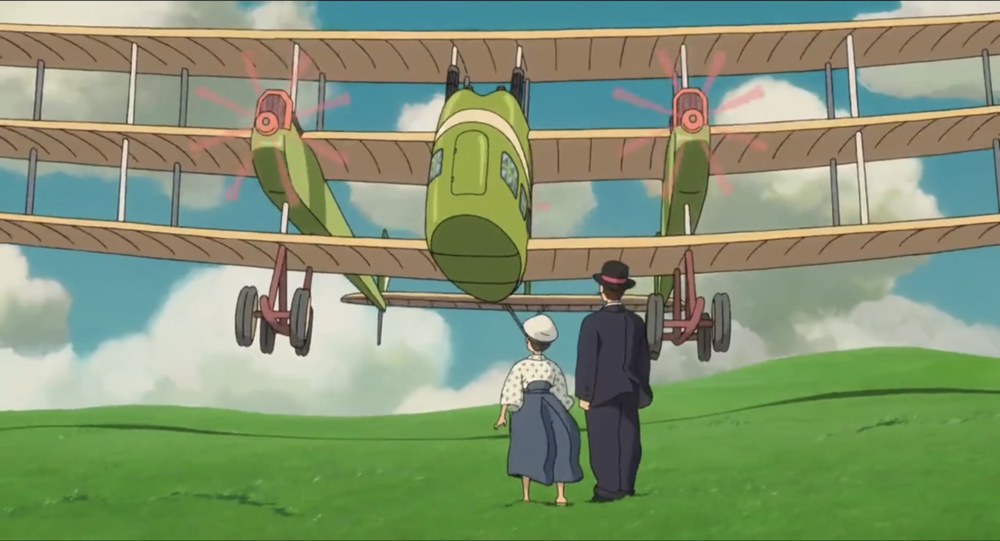

“Tutti sanno che una cosa è impossibile da realizzare, finché arriva uno sprovveduto che non la sa e l’inventa.” (Albert Einstein)
Il “mito della velocità” ha sempre caratterizzato la vita dell’uomo, configurandosi in ogni epoca in modo diverso pur rimarcando lo stesso bisogno dell’essere umano di raggiungere sempre nuovi traguardi, nuovi obiettivi, andare sempre più veloci superando se stessi e rifiutando quei limiti imposti dal senso comune e che, con coraggio e determinazione, dobbiamo rompere. Questo bisogno ha spinto Francesco Agello nel 1934 a stabilire il record mondiale, tutt’ora imbattuto, di velocità per idrovolanti e porta l’essere umano a vivere in una società che, nel nome del progresso, va sempre più veloce. Presenteremo quindi un percorso multidisciplinare con l’obiettivo di comprendere come “il mito della velocità” si sia evoluto nel Novecento, partendo dalla contestualizzazione storica e analizzando diversi ambiti (scientifico, tecnologico, artistico e sportivo), focalizzando l’attenzione anche sulle questioni etiche collegate al progresso e quindi ad una società in continua evoluzione.
Agello nel suo tempo: progresso tecnico-scientifico dell’Italia del Dopoguerra e del Ventennio Fascista.
Introduzione
Possiamo ben immaginare il sogno di Francesco Agello essere sempre stato il cielo e l’aviazione. Quale grande soddisfazione deve essere stata quella di aver raggiunto il record dei 709,2 km/h il 23 ottobre del 1934 con un M.C-72. Nasce a Casalpusterlengo, in provincia di Lodi e muore nel cielo dell’aeroporto di Milano-Bresso dopo essersi scontrato con Francesco Masiero mentre collaudavano lo stesso apparecchio, un M.C-202. Il periodo del primo dopoguerra fu effettivamente l’età d’oro della storia dell’aviazione. In Italia venne istituita nel 1923 la Regia Aeronautica, una delle quattro forze armate del Regno d’Italia. Se da una parte questa aveva un ruolo strategico, allo stesso tempo doveva occuparsi delle ricerche per lo sviluppo dell’aviazione.
Lo sviluppo tecnico-scientifico del dopoguerra e dell’Italia fascista
A questo punto, per capire come Francesco Agello si ritrovò su un idrovolante ad istituire un record mondiale, dovremmo chiederci: come ha fatto una macchina del genere ad arrivare sotto al suo comando?
David S. Landes definisce la rivoluzione industriale in due modi. Il primo recita che essa è un complesso di innovazioni tecnologiche che, sostituendo all’abilità umana le macchine e alla fatica di uomini e animali l’energia inanimata, rendono possibile il passaggio dall’artigianato alla manifattura, dando vita così a un’economia moderna, definizione che certamente riguarda la prima rivoluzione che ebbe luogo nell’Inghilterra del 1750; il secondo è carico di un significato ancora attuale in quanto esprime un cambiamento tecnologico rapido e significativo.
La Prima Guerra Mondiale aveva comportato degli enormi cambiamenti sul piano produttivo, poiché le nazioni che ancora presentavano un’economia tradizionale dovettero muoversi rapidamente verso una di forma moderna, risultato di disposizioni emergenziali dettate dalle necessità della guerra.
Perciò, dopo la macchina a vapore era stata la guerra ad accelerare nuovamente lo sviluppo produttivo.
Nel periodo postbellico un’ulteriore forzatura fu fatta dai capi di governo. Sulle basi del nazionalismo preesistente, della previsione di una futura guerra e dallo spirito di competitività di quelle gare (come la coppa Schneider) nate per promuovere la ricerca, si fondò la necessità di implementare la tecnologia del paese. Successivamente alla nascita dello stato fascista, la ricerca fu finanziata e direzionata nel settore delle scienze applicate. Così, mentre progrediva l’industria elettrica, chimica e automobilistica e venivano introdotti nuovi istituti quali di elettrotecnica, elettrochimica, chimica applicata, meccanica applicata e scuole di ingegneria; soffriva la ricerca della pura scienza matematica, fisica e chimica. Il Regime concentrava la sua attenzione su due temi: i fertilizzanti, fondamentali nella guerra del grano e i combustibili. Era emersa durante la Guerra la carenza dei combustibili italiani, problematica che portò, nel 1926, alla fondazione dell’AGIP, che aveva lo scopo di cercare il petrolio nel sottosuolo.
in questo modo aprirsi numerosi campi di ricerca finalizzati alla risoluzione di problemi pratici. Le scoperte che più incideranno saranno quella della fissazione dell’azoto atmosferico (Fauser) che permetterà la produzione della calciocianamide, fertilizzante d’uso nella coltivazione del grano, e gli studi sull’elettrolisi dell’acqua per la produzione di idrogeno da usare nella sintetizzazione di carburanti.
L’affermarsi di queste innovazioni tecniche, a cui si aggiunge il prestigio della Scuola Romana di Enrico Fermi e dei ragazzi di via Panisperna, istigò quello che viene chiamato nazionalismo scientifico, ossia la convinzione della superiorità della propria nazione in campo scientifico e tecnico. Il presunto primato italiano nell’ambito tecnico-scientifico era riconosciuto dagli scienziati nella sua vera natura: uno strumento del Regime per elogiarsi, ignorando le criticità della sua manovra. Infatti, la ricerca nettamente pratica oppresse quella teorica, portando ad un rapido crollo di quel breve primato ottenuto a fatica. Il fallimento fu evidente: il Consiglio Nazionale delle Ricerche (CNR), fondato nel 1923, riuscì a svolgere compiutamente una sola ricerca, quella relativa ai bisogni dell’industria italiana. Il responsabile delle rilevazioni, Giovanni Scanga, denunciò il livello tecnologico arretratissimo delle nostre industrie in quanto bombardate da innovazioni frammentarie piuttosto che da poche e significative. Questa fu la conseguenza dell'implementazione della scienza pratica su quella teorica, che portò alla semplificazione procedimenti retrogradi che andavano superati e che lasciò morire contesti d’eccellenza che si erano sviluppati, quale la Scuola Romana. Questo fu il motivo per cui l’Italia non si distinse mai per l’innovazione tecnologica: la propaganda fascista era stata solo fumo negli occhi.
Conclusione: Agello nel posto giusto al tempo giusto.
Francesco Agello è stato uno dei tanti ragazzi ad inseguire il sogno degli aeroplani, desiderio rappresentato da Miyazaki nel film Si alza il vento, di cui si segue a discutere. Il contesto storico di cui è figlio lo portò a vivere un’Italia dove non mancarono i soldi per i progetti del Dipartimento Sperimentale dell’aviazione militare dove lavorava l'ingegner Castoldi, progettatore dell’idrovolante che lo ha reso famoso. Notiamo inoltre che non è una coincidenza che il motore dell’idrovolante fosse di produzione FIAT dato che, come sappiamo, la politica di regime promosse l’industria automobilistica. In conclusione, possiamo leggere nel record del militare Francesco Agello un evento felice, seppur finalizzato a se stesso, dove l’emozione degli appassionati si mischia alla strumentalizzazione del Regime al fine di promuovere il presunto primato dell’aviazione italiana.
Si alza il vento: la rappresentazione del sogno dell'aviazione
"Si alza il vento" è un film d'animazione scritto e diretto da Hayao Miyazaki e prodotto dallo Studio Ghibli. È stato presentato per la prima volta il 20 luglio 2013 in Giappone ed è arrivato nei cinema italiani il 13 settembre 2014.
Il film racconta la vita di Jiro Horikoshi, un giovane giapponese con una grande passione per l'aviazione. A causa della sua miopia, non può diventare pilota, così decide di progettare aerei. Ispirato dal leggendario progettista italiano Giovanni Battista Caproni, Jiro insegue il sogno dell’aviazione creando aerei innovativi. La storia segue la sua carriera durante il periodo tra le due guerre mondiali, culminando con la progettazione del Mitsubishi A5M e del famoso Mitsubishi A6M Zero, usato durante la Seconda Guerra Mondiale. Parallelamente, il film esplora la sua storia d'amore con Nahoko Satomi, una giovane donna malata di tubercolosi, offrendo un ritratto toccante della bellezza e della fragilità della vita.
Il film è parzialmente basato sul romanzo Kaze Tachinu di Tatsuo Hori basato sulla vita reale di Jiro Horikoshi, ingegnere aeronautico giapponese. Il titolo è ispirato a un verso del poeta Paul Valéry: Le vent se lève!... Il faut tenter de vivre! (Si alza il vento... bisogna tentare di vivere). È stato acclamato per l'animazione dettagliata e il tono maturo, affrontando temi complessi come i sogni, le responsabilità morali e le conseguenze della guerra. La pellicola esplora in modo poetico e malinconico il confine tra sogno e realtà, celebrando la bellezza della creazione pur riconoscendo il peso delle sue implicazioni etiche. La delicatezza narrativa e la profondità emotiva del film gli hanno permesso di ottenere numerosi premi, tra cui una nomination agli Oscar come Miglior film d'animazione, consolidando ulteriormente l'eredità artistica di Miyazaki e il prestigio dello Studio Ghibli a livello internazionale.
Jiro Horikoshi è un sognatore idealista che vede l'aviazione come un'arte pura e affascinante. Per lui, gli aerei sono opere di bellezza e ingegno umano, e non strumenti di guerra. La sua visione è alimentata dai sogni in cui dialoga con il signor Caproni, che lo ispira a inseguire la bellezza senza preoccuparsi dell'uso bellico delle sue creazioni. Tuttavia, Jiro è anche consapevole delle implicazioni morali del suo lavoro, poiché (sa che) i suoi aerei saranno utilizzati come armi. Questo conflitto interiore tra sogno e realtà, tra creazione e distruzione, rende il personaggio complesso e profondamente umano.

Il contesto storico di "Si alza il vento" si intreccia con l'epoca d'oro dell'aviazione tra le due guerre mondiali, un periodo caratterizzato da rapide innovazioni tecnologiche e dalla competizione internazionale nelle gare di idrovolanti. Queste competizioni, come la celebre Coppa Schneider, erano eventi prestigiosi in cui diverse nazioni si sfidavano per dimostrare la superiorità ingegneristica dei propri aerei. In particolare, l'Italia eccelleva grazie ai progetti di Giovanni Battista Caproni e Mario Castoldi, noto per aver progettato l'M.C.72, l’idrovolante da record mondiale guidato da Agello.
Miyazaki, appassionato di aviazione e profondamente influenzato da questo periodo storico, utilizza le gare di idrovolanti come sfondo ispiratore per il sogno del protagonista, Jiro Horikoshi. Sebbene Jiro non progetti idrovolanti, la sua visione dell'aviazione come arte è modellata dall'ammirazione per gli ingegneri italiani e dai progressi tecnologici dell'epoca. Nei suoi sogni ricorrenti, Jiro dialoga con Caproni, che incarna lo spirito pionieristico e la passione per l'eleganza e la bellezza del volo, valori centrali anche nelle competizioni di idrovolanti. Queste gare non erano solo dimostrazioni di abilità tecnica, ma anche eventi simbolici di prestigio nazionale, in cui il volo diventava metafora di progresso e modernità. L'influenza di questo contesto storico è evidente nell'estetica e nei temi del film, che celebra l'ingegno umano pur riflettendo sulle responsabilità morali legate all'innovazione tecnologica.
L'uomo moderno come espressione della velocità
“Noi affermiamo che la magnificenza del mondo si è arricchita di una bellezza nuova: la bellezza della velocità” (Filippo Tommaso Marinetti)
Il ‘900 si apre come secolo votato all’innovazione e al progresso, in cui delineare un mondo nuovo, dominato dalla meccanica e dalla tecnologia. Il progresso tecnologico, sempre più rapido, sta plasmando un nuovo universo: per vivere pienamente ed essere protagonista attivo della propria vita, l’uomo deve perseguire un’esistenza dinamica, energica e audace, svincolandosi aggressivamente dal passato, concepito come una zavorra per l’innovazione. La macchina diventa, quindi, metafora dell’esistenza dell’uomo moderno: attraverso l’ebbrezza della velocità portata ai suoi limiti, l’uomo può abbattere le barriere del Tempo e dello Spazio, vivendo solamente nella dimensione dell’”eterna velocità”.
declama questi nuovi ideali nel Manifesto del Futurismo, pubblicato nel 1909 sul giornale Le Figaro. In questo testo, delinea con fermezza gli elementi centrali di quest’avanguardia, quali l’estetica della velocità, l’ideologia del dinamismo e l’idolatria della modernità.
Il poeta conia, infatti, una nuova concezione di bellezza, da ricercarsi nella possibilità dell’uomo di dominare rapidamente la realtà sensibile, abbandonando e denigrando i sentimenti e la psicologia umana. La macchina rappresenta questo nuovo canone estetico: è il nuovo soggetto dell’arte, la moderna Vittoria di Samotracia. Ammirare un quadro in un museo, cimitero di una cultura passata, equivale per Marinetti a “versare la nostra sensibilità in un’urna funeraria”; il nuovo veicolo, al contrario, diventa il simbolo dello slancio vitale, dei “violenti getti di creazione e di azione” propri dell’uomo del nuovo secolo.
L’automobile diventa, così, un’affermazione di potere e libertà: dà la possibilità all’uomo moderno di dominare il Tempo e lo Spazio. Marinetti inneggia all’uomo al volante, lanciato in una folle corsa capace di proiettarlo, in un rombo di motori, direttamente nel futuro.
La letteratura come intuizione
Per potersi realmente svincolare dalla zavorra del passato, Marinetti necessita di un nuovo linguaggio, tramite il quale infondere nella letteratura la vita del motore. Questo deve essere veloce e immediato; deve permettere all’uomo di leggere con slancio ed impeto. Abolisce l’aggettivo, il quale, racchiudendo in sé un carattere di sfumatura, presuppone una sosta e una meditazione. Impone l’uso del verbo all’infinito, eliminando l’io dello scrittore e conferendo allo scritto un senso di continuità tra l’azione e l’intuizione con cui essa è percepita. Distrugge la sintassi e la punteggiatura: le parole devono essere disposte “a caso, come nascono”, in uno stile vivo che si crei da sé, privo delle “soste assurde delle virgole e dei punti”.
Lo scrittore vuole liberare le parole, sintetizzando l’espressione letteraria in una rapida intuizione. Perché il poeta dovrebbe “servirsi ancora di quattro ruote esasperate che s’annoiano”, chiede Marinetti, dal momento che “può staccarsi dal suol”? Il nuovo scrittore deve, quindi, affrancare le parole e spiegare le ali dell’immaginazione, abbracciando tutta la Terra con un solo sguardo e ridefinirla con un fiume impetuoso di parole essenziali.
L’opera che meglio rappresenta il carattere innovativo e dinamico della letteratura futurista è Zang Tumb Tumb, poesia che descrive i bombardamenti dell’assedio di Adrianopoli del 1912-13. La novità di questa poesia risiede nella sua forma stilistica. L’autore stravolge, infatti, i normali costrutti grammaticali, organizzando le parole in un flusso ininterrotto di intuizioni e percezioni. A livello tipografico, invece, sperimenta nuove forme stilistiche, fornendo al lettore non una semplice lettura, bensì un’esperienza sensoriale completa. Tramite la distribuzione fisica delle parole sul foglio e l’alternanza di più misure e tipologie di caratteri, il poeta evoca la battaglia in tutta la sua violenza e atrocità. Nella concezione di Marinetti, ripresa in seguito dal fascismo, la guerra è infatti la massima espressione dello sviluppo tecnologico ed industriale dell’epoca. La ritiene, quindi, da glorificare, in quanto “igiene del mondo”. Viene qui descritta tramite “parole libere” e, soprattutto, onomatopee. Tramite questi espedienti stilistici, il poeta vuole esprimere pienamente il flusso delle sensazioni, unendo letteratura e realtà in una completa ed innovativa esperienza multisensoriale. Di seguito si riporta il testo di Zang Tumb Tumb, affiancato da una lettura espressiva: parliamoitaliano.altervista.org
L’interpretazione degli inizi del XX secolo della velocità, rappresentata al suo estremo in letteratura da Marinetti, non fu l’unica fornita nel corso dei secoli su questo tema. Uno dei più antichi scritti pervenuti fino a noi è la celebre favola della lepre e della tartaruga di Esopo, la quale si conclude con una morale diametralmente opposta a quella di Marinetti: “Non serve correre, bisogna partire in tempo.”. Questa massima, in contrapposizione a quella del poeta moderno, ha tutt’ora un grande valore. In un mondo sempre più frenetico, in cui bisogna “correre” non più per dominare il futuro come prevedeva Marinetti, ma per restare al passo con il presente, è importante non lasciarsi sopraffare dalla velocità, bilanciando la presenza nel momento e la spinta verso il futuro, trovando la propria velocità ottimale per vivere pienamente e attivamente la propria esistenza.
Velocità tra progresso e insoddisfazione
Le macchine sono il simbolo concreto di progresso, tecnologia e velocità concetti sempre più inseparabili, che rappresentano il dominio dell’uomo sulla natura, sullo spazio e sul tempo. Tra il XVII e il XVIII secolo, con la diffusione dell'Illuminismo, si diffonde l'idea che l'umanità stia avanzando in modo continuo e inevitabile. Questa convinzione si basa sulle nuove scoperte scientifiche e sui progressi tecnologici del periodo. Con l'inizio della Rivoluzione Industriale, la produzione e la vita quotidiana subiscono un’accelerazione senza precedenti, creando una forte separazione tra campagna e città.
La tecnologia permette di svolgere le stesse attività in meno tempo, ma questo non porta a un reale aumento del tempo libero. Nel suo libro Elogio dell’ozio (1935), il filosofo Bertrand Russell riflette sul seguente paradosso:
Supponiamo che […] una certa quantità di persone sia impegnata nella produzione di spilli. […] Ed ecco che qualcuno inventa una macchina grazie alla quale lo stesso numero di persone nello stesso numero di ore può produrre una quantità doppia
Russel osserva che, i progressi tecnologici, non determinano una diminuzzione delle ore di lavoro, ma solo una sovraproduzione superflua e dannosa.
La velocizzazione delle attività si riflette anche nei trasporti, il filosofo Ivan Illich nel saggio Energia ed equità (1974), scrive:
La velocità incontrollata è costosa, e sono sempre meno quelli che possono permettersela. […] Le grandi velocità per tutti comportano che ognuno abbia sempre meno tempo per sé.
Illich intende che i mezzi di trasporto consumano energia per essere prodotti e utilizzati, spazio per muoversi ed essere parcheggiati. Secondo il filosofo è necessario porre un limite di equità pari a 25 km/h, quello della bicicletta che si muove con la potenza metabolica di un uomo.
la bicicletta richiede poco spazio. Se ne possono parcheggiare diciotto al posto di un'auto, se ne possono spostare trenta nello spazio divorato da un'unica vettura.
L’aumento della velocità permette all’uomo di percorrere distanze sempre maggiori ma ciò non comporta una guadagno di tempo in media in italia delle 16 ore passate svegli il 10% sono impiegate nel trasporto per andare al lavoro
Con lo sviluppo di internet i ritmi di vita collettivi ed individuali hanno subito una consistente accellerazione che però ultimamente sembra non avere più un preciso obbiettivo. Il filosofo francese Jean Baudrillard nel testo “illusione dell’immortalità”, evidenzia come la velocità dell’epoca contemporanea modifica il nostro rapporto con il tempo, e porta alla totale assenza di una visione futura, utopica.
Il sociologo Harmut Rosa (1965) nel saggio “Accelerazione e alienazione” spiega che la velocità è un risultato culturale e sociale, lo spirito di competizione che ne cosegue porta l’insoddisfazione di chi va veloce perché ci sarà sempre qualcuno che lo supererà e un senso di inadeguatezza in chi rimane indietro. Ormai questo meccanismo talmente radicato nella nostra società che quando qualcuno è costretto a fermarsi in seguito a quelle che Rosa chiama decelerazioni accidentali, depressione o esaurimento emotivo (burn-out), viene etichettato negativamente dalla società e sente di perderesi qualcosa e rimanere indietro.
L’accelerazione dei ritmi degli ultimi decenni non sembra più avere neanche un preciso obiettivo da raggiungere: il movimento spesso sembra essere diventato è fine a sé stesso. Questa visione rappresenta comunque solo una faccia della medaglia è infatti innegabile il ruolo positivo della costante accellerazione che spinge l’uomo ad andare sempre oltre dando sfogo alla sua curiosià e facendogli raggiungere traguardi inimmaginabili
“È strano: proprio quando penso di essere andato il più lontano possibile, scopro che posso spingermi ancora oltre” (Ayrton Senna)
Velocità della luce: un limite insuperabile
Era il settembre del 2011 quando un esperimento congiunto del Cern e dei Laboratori del Gran Sasso pubblica una scoperta che avrebbe rivoluzionato la fisica che oggi conosciamo: neutrini più veloci della luce. In realtà pochi giorni dopo la pubblicazione arriva la smentita, alla base dell’errore solo semplici problemi tecnici:“un elemento difettoso del sistema di cronometraggio delle fibre ottiche dell’esperimento.”secondo quanto si legge sul sito ufficiale dell’INFN. Le implicazioni di questa scoperta sarebbero state clamorose, avrebbe messo in discussione la teoria della relatività ristretta di Albert Einstein (la teoria più consolidata e confermata da verifiche sperimentali del Novecento). L’aspetto forse più interessante di questo evento è che a seguito della pubblicazione, fisici da tutto il mondo hanno iniziato a progettare esperimenti per smentire le scoperte di Einstein. Questo fatto è sicuramente indicativo del bisogno dell’essere umano di superare i limiti che gli sono stati imposti, primo fra tutti quel confine stabilito dalla natura che è la velocità della luce nel vuoto. Ancora non abbiamo avuto successo in quest’impresa, ma ci stiamo avvicinando sempre di più e la ricerca scientifica non smette mai di misurare velocità di particelle in ambienti e tempi diversi. Più recente è, per esempio, la scoperta del neutrino di Portopalo (annunciata con un articolo su Nature il 12 febbraio 2025) che è la particella più energetica mai stata rilevata e caratterizzata da una velocità superiore a quella della luce nell’acqua.
Abbiamo quindi capito che la natura ci ha imposto un limite che al giorno d’oggi sembra insuperabile: la velocità della luce nel vuoto. Questo concetto è stato introdotto agli inizi del Novecento da Albert Einstein ed è assolutamente innovativo: per la fisica classica era impensabile che ci fosse un limite alla velocità che un corpo può raggiungere. Di Einstein ricordiamo in particolare due teorie: la Relatività Ristretta (1905) e la Relatività Generale (1915). In questo caso analizzeremo più in particolare la prima teoria, la quale si basa essenzialmente su due postulati:
Principio di relatività ristretta: le leggi e i principi della fisica hanno la stessa forma in tutti i sistemi di riferimento inerziali.
Principio di invarianza di c: la velocità della luce è la stessa in tutti i sistemi di riferimento inerziali, indipendentemente dal moto del sistema stesso o della sorgente da cui la luce è emessa.
La conseguenza più importante di questi assiomi è che i corpi non possono superare la velocità della luce (c) e, inoltre, Einstein dimostra che, nonostante le regole della meccanica newtoniana fossero corrette per corpi che si muovono a velocità molto più basse di c, non valgono più quando si prendono in considerazione velocità molto elevate. Il primo aspetto della relatività ristretta che andremo ad indagare sarà il tempo: Einstein comprenderà, decenni prima che venisse verificato sperimentalmente, che il tempo si dilata per oggetti in moto secondo la formula:
$$ Δt=γΔt' $$
con
$$ γ=\frac{1}{ \sqrt[2]{1-\frac{v^2}{c^2}}} $$
Questo concetto ha avuto senza dubbio implicazioni enormi, cambia radicalmente il nostro modo di concepire il tempo rovesciando il sistema di pensiero della fisica classica. Il fisico teorico Carlo Rovelli dice commentando queste conclusioni nel suo libro L’ordine del tempo: “l’idea che esista un adesso ben definito ovunque nell’universo è quindi un illusione, un’estrapolazione illegittima della nostra esperienza”. Rovesciare il concetto di assolutezza del tempo porta però ad un’altra importante implicazione, infatti bisogna rovesciare consequenzialmente lo stesso concetto ma riferito allo spazio fino a dimostrare che
$$ L=\frac{L'}{γ} $$
Poiché y < c, possiamo affermare che y > 1 e di conseguenza a velocità simili a quella della luce nel vuoto si parla di contrazione delle lunghezze (la lunghezza misurata nel sistema di movimento è minore di quella propria). Questo fenomeno riguarda però solo le dimensioni parallele al moto e non quelle perpendicolari, che, come possiamo osservare dalla figura, risultano invariate.
La contrazione delle lunghezze e la dilatazione dei tempi sono dimostrabili attraverso lo studio dei muoni, particelle che si formano nell’atmosfera a causa dell’interazione tra i protoni e altri atomi e che sono talmente instabili da decadere in una frazione di tempo che, in un sistema solidale, corrisponde a s. Il problema sorge nel momento in cui rilevatori sulla superficie terrestre registrano la presenza di muoni anche al livello dell’acqua nonostante, considerata la breve durata della vita media della particella, il muone, se anche si muovesse alla velocità della luce nel vuoto, non potrebbe percorrere più di 660m circa (distanza notevolmente inferiore rispetto a quella percorsa). Questo fenomeno è spiegabile utilizzando i principi della relatività ristretta e quindi la dilatazione dei tempi e la contrazione delle lunghezze. Questa caratteristica dei muoni venne usata nel 1940 da Rossi e Hall per dimostrare la teoria della relatività ristretta di Einstein del 1905.
Albert Einstein ha completamente rivoluzionato il modo in cui l’uomo concepiva lo spazio e il tempo, che può quindi essere rappresentato attraverso una figura particolare: il cono di luce.
Il vertice rappresenta l’evento presente e da questo particolare punto si originano due coni infiniti orientati in senso opposto: quello inferiore rappresenta il passato e quello superiore il futuro. Il punto in corrispondenza del vertice non può muoversi verso il passato, ma potrà occupare solo un punto del futuro. La superficie del cono rappresenta l’evento alla velocità della luce e, poiché i corpi non possono superare c, il punto non può occupare posizioni esterne alla figura. In questo modo è possibile dare al concetto di passato, presente e futuro un significato oggettivo.

.jpg)
.jpg)
.jpg)